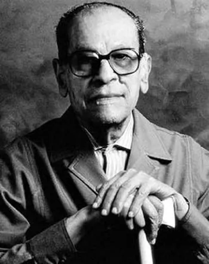

khan al khalili est l'oeuvre de najib mahfouz, ne le 11 decembre 1911 dans le quartier populaire de gamaliyya a khan al-lhalili au caire et mort le 30aout 2006, est un écrivain égayptien contemporain de langue arabe et un intellectuel réputé d'égypte,ayant recu le prix npbel de littérature en, 1988. la carriére littéraire de naguib mahfouz se confond avec l'histoire du roman arabe fait ses oremiers pas dans une société et une culture qui découvrent ce genre littéraire a travers la traduction des romans européens du xixe siécle.